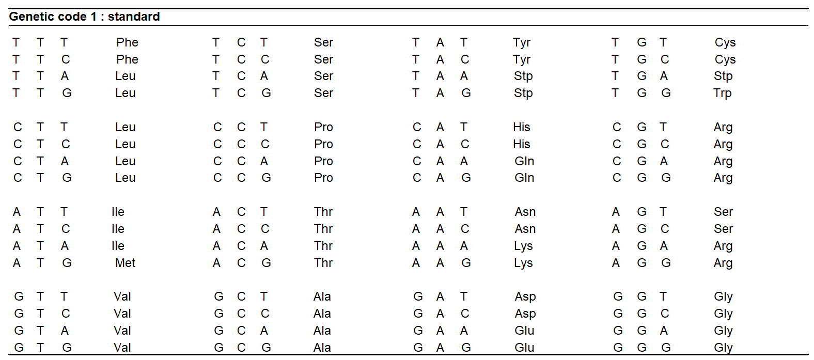
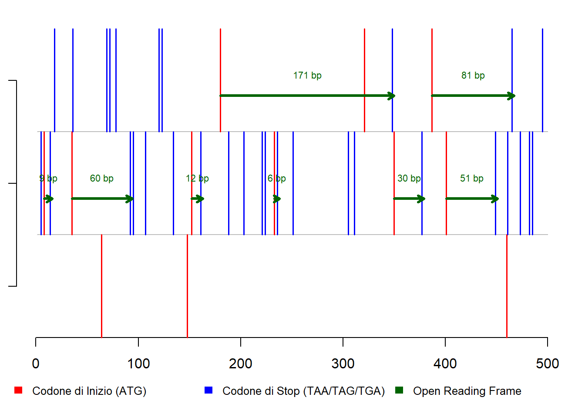

Un codone è una tripletta di basi nucleiche.
Un gene che codifica le proteine inizia con un codone “ATG”, seguita da un numero intero di codoni che codificano gli aminoacidi, e termina con un codone “TGA”, “TAA” o “TAG”.

Si riconosce facilmente il codone di inizio (Met) e quelli di fine (Stp)
accession_id <- "NC_001477"
database_name <- "nuccore"
FASTA_1 <- entrez_fetch(db = database_name, id = accession_id, rettype = "fasta", retmode = "text")Utiliziamo la mia Super-Funzione FASTA per visualizzare il contenuto del fetch:
FASTA(FASTA_1,500)Nota: I codoni di START (ATG) sono in ROSSO, i codoni di STOP (TAA, TAG, TGA) sono in BLU.
1 AGTTGTTAGTCTACGTGGACCGACAAGAACAGTTTCGAATCGGAAGCTTGCTTAACGTAG 61 TTCTAACAGTTTTTTATTAGAGAGCAGATCTCTGATGAACAACCAACGGAAAAAGACGGG 121 TCGACCGTCTTTCAATATGCTGAAACGCGCGAGAAACCGCGTGTCAACTGTTTCACAGTT 181 GGCGAAGAGATTCTCAAAAGGATTGCTTTCAGGCCAAGGACCCATGAAATTGGTGATGGC 241 TTTTATAGCATTCCTAAGATTTCTAGCCATACCTCCAACAGCAGGAATTTTGGCTAGATG 301 GGGCTCATTCAAGAAGAATGGAGCGATCAAAGTGTTACGGGGTTTCAAGAAAGAAATCTC 361 AAACATGTTGAACATAATGAACAGGAGGAAAAGATCTGTGACCATGCTCCTCATGCTGCT 421 GCCCACAGCCCTGGCGTTCCATCTGACCACCCGAGGGGGAGAGCCGCACATGATAGTTAG 481 CAAGCAGGAAAGAGGAAAAT
Ora utiliziamo la mia Super Funzione START_STOP per evidenziare le posizioni degli start e degli stop
START_STOP(FASTA_1,1500)Positions: 7 53 58 64 78 93 95 96 137 141 224 225 234 236 246 255 264 295 298 318 365 369 375 377 378 399 404 413 444 470 471 474 478 511 533 551 568 571 581 582 592 607 621 622 628 642 655 660 666 673 688 732 744 767 775 819 840 843 855 861 867 909 911 918 929 935 951 999 1014 1034 1063 1071 1117 1123 1153 1242 1267 1272 1275 1285 1291 1299 1320 1329 1330 1338 1350 1353 1392 1393 1407 1425 1458 1476 1495 Types: TAG TAA TAG TAA TAG TGA ATG TGA ATG TGA ATG TGA TGA ATG TAG TAA TAG TAG ATG ATG ATG TGA TAA ATG TGA TGA ATG ATG TGA ATG TGA TAG TAG TAA ATG ATG ATG TGA ATG TGA ATG TGA ATG TGA TGA ATG ATG TGA ATG ATG TGA TAG TAG ATG TGA TGA TGA TAG TAG ATG TAG TGA ATG TAA ATG ATG TAG ATG ATG ATG TGA TGA TGA TAA ATG ATG TAG TAA TAA TAA TAA TGA TAG ATG TGA TAA TGA TAG ATG TGA ATG TAA TGA TAA TAG
I codoni di inizio e di stop in una sequenza di DNA possono risiedere in uno dei tre possibili frame di lettura (reading frame)
Per capirci, immagina la frase: ATGCCAGTC
Frame di Lettura +1 (Parti da subito) Frase: A T G C C A G T C Lettura: ATG (prima parola) CCA (seconda parola) GTC (terza parola)
Frame di Lettura +2 (Parti dalla seconda lettera) Frase: A T G C C A G T C Lettura: TGC (prima parola) CAG (seconda parola) TC (resta solo ‘TC’, non è una parola completa di tre lettere, la scartiamo)
Frame di Lettura +3 (Parti dalla terza lettera) Frase: A T G C C A G T C Lettura: GCC (prima parola) AGT (seconda parola) C (resta solo ‘C’, non è una parola completa di tre lettere, la scartiamo)
Quando troviamo un pezzo di DNA che inizia con un segnale di start e finisce con uno di stop, e tutto è allineato correttamente nello stesso modo di lettura, lo chiamiamo ‘Open Reading Frame’ (ORF). Un ORF è un buon indizio che lì c’è un gene.
ORF(FASTA_1,500)
##
## --- Open Reading Frames (ORF) identificati ---
## Numero totale di ORF trovati: 2
##
## ORF 1:
## Inizio: 298
## Fine: 480
## Lunghezza: 183 bp
## Frame di Lettura: +1
## ---
## ORF 2:
## Inizio: 318
## Fine: 371
## Lunghezza: 54 bp
## Frame di Lettura: +3
## ---